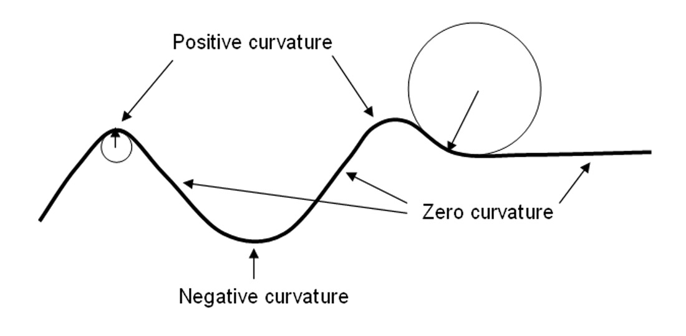
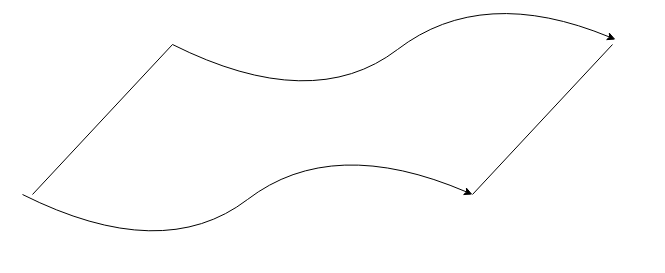
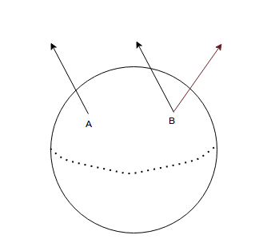
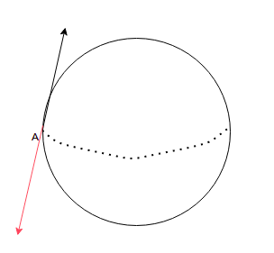

Euclidean geometry rests on Euclid's 5 postulates, which are basically the set of rules for doing anything in Euclidean space:
Draw a straight line from any point to any point.
Produce a finite straight line continuously in a straight line
Describe a circle with any center and distance
All right angles are equal to one another
if a straight line falling on two straight lines makes the interior angles on the same side less than two right angles, the two straight lines, if produced indefinitely, meet on that side on which are the angles less than the two right angles.
The fifth postulate, also known as the parallel postulate, was what was violated to create variants of geometry as follows:
Spherical/Elliptical Geometry → This assumes that the parallel lines converge, for example, to the poles of a sphere. So, imagine two parallel lines start from somewhere in the equator and converging on the poles of a sphere. If we hold this sphere from the poles and pull it, we get a surface that is not equally curved at all points - an ellipse - and the similar idea of converging lines applies to it too. The rules that govern this 'world' would then need to be changed, like the interior angles of a triangle on this surface which would no longer be π radians, but something like π(1+4f) where f is the fraction of the sphere's surface that is enclosed by the triangle
Hyperbolic Geometry → Here we violate the fifth postulate by assuming a scenario where the parallel lines diverge. An example surface that obeys rules for this geometry could be the shape of the pringles chips - hyperbolic paraboloid - and we can easily produce 2 parallel lines and see that they diverge along the surface.
To go abstract, we want to understand how we can generalize to any kind of surface geometry → Abstract and define the ideas that are central to these geometries. So, we start with understanding some properties of the spherical and hyperbolic geometry.
If we draw concentric latitudes around the pole, we would see that taking the radius of the circles as the length from the center of the sphere and then measuring the circumference, we would see that it would actually be the same as the standard circle formula → it would be somewhat lesser for all points not at the equator:
⟹C=2πRsin(Rr)C<2πR
This is like saying that that the sphere is tending to curve towards the horizontal origin - the pole. For the saddle - the pringles - on the other hand, we would see that the curvature is actually not tending towards anything. To make this notion more precise, we can take the second derivative of the surface at each point by defining a vector that is normal to the surface at each point, and classify the curvature:
Positive Curvature → Curvature has a tendency to curve in the same direction as the tangent i.e the second derivative is negative
Negative Curvature → Curvature that tends away from the tangent i.e the second derivative is negative
Zero Curvature → The notion of flat
This is somewhat similar to how we would define the points of maxima and minima for functions, and a 2D equivalent is shown below:

Thus, now we have a notion that allows us to say that the spherical curvature is positive, while the hyperbolic curvature is negative. The Euclidean curvature is, of course, flat. Another way to think of this would be that there is a notion of finiteness associated with the positive curvature of spherical geometry, which is what relates to the parallel lines focusing on one point when produced further, while there is a notion of infinity associated with negative curvature that makes the parallel lines diverge in the hyperbolic case. Since the Euclidean plane is flat, this means that the parallel lines would keep going-on till infinity without ever meeting.
The first step to creating a general notion of geometry is to understand the point of view when we are talking about surfaces. The classical way of looking at geometry is through a higher dimensional space in which it is embedded. So, When I am looking at a place, I exist in R3 in which there is a surface in R2 that I can see and then comment on its properties like curvature, etc. This is an Extrinsic View, and so the curvature is the Extrinsic Curvature of the surface. However, this might not be the most ideal way to go about looking at curvature since we always need a higher dimensional space to be able to study any space.
Another view to studying geometry is the Intrinsic view, where we study the space from the perspective of the space itself. This is the same as saying we take a space, get some 'rulers' to measure something like a distance on this space, and 'protractors' to measure something like an angle. Using these tools, we create a system that allows us to understand the curvature of our space in and of itself. This curvature would be called the Intrinsic Curvature
To demonstrate this, consider the figure shown below. One way to think of it would be to consider a Euclidean space that has been 'waved' a bit. The extrinsic picture from 3D is pretty clear. However, if we think from the point-of-view of a creature bound to this 2D space → To the creature this is still a flat surface.

To understand why we need to use vectors. Let's take the simple example of a sphere. At any point we can define two vectors:
Normal Vector → That protrudes outwards from the sphere and so is coming out into the 3D space
Tangential Vector → This is tangent to the surface at every point, so remains in the tangent plane
We can use Normal vectors to define the extrinsic curvature → Consider a Normal Vector at a point A on a sphere. If we parallel transport this vector to a point B i.e take this vector and put it at point B through some path while keeping its original orientation intact, we can then compare this vector with the normal vector at B and the difference between these vectors would define the extrinsic curvature of the surface

We can use Tangential vectors to study the intrinsic curvature of this surface → If we take a tangential vector at point A on this sphere and then make it go a loop around this sphere and then compare how it has changed, this should be proportional to the curvature of the region enclosed by the loop. For example, in the figure below, if we take the tangential vector, and then transport it through the upper hemisphere to the other end and then come back to the original point through the equator, we will actually get a π radian shift.

This would not be the case if this vector was parallel transporting on a Euclidean space since in any loop we would get the same vector. If we use this procedure on the wavy surface, we can see that both the tangential vector would not change in a loop but the normal vector would. Hence, we say that the surface is extrinsically curved but intrinsically flat.
We can use the ideas above to create some notions around any curved surface we want. to do this we first need to assume that the surfaces are smooth i.e the there are no abrupt changes. This idea if formalized further in Topology into the notion of a manifold. For now, let's go with the notion that if we are to zoom into this smooth surface, we would end up encountering an Euclidean space, similar to how the earth seems flat but in actuality it is curved (Flatearthers ?). Thus, if we zoom a good eough anoumt, we could get an infinitesimally small Euclidean space. O this space, we would not need to define the notion of a distance which comes from the L2 norm i.e the pythagoras theorem:
ds2=dx12+dx22
If we were to scale x1,x2 by som constants a1,a2 and then change the right angle to an angle θ between a1x1 and a2x2, then our equation would be modified to:
ds2=a12dx12+a22dx22+2a1a2dx1dx2cos(θ)
This is called a Metric Tensor. We can express this in a general matrix form to make it extendable to more dimensions and more information that might be required for the surface oto characterize it
We can use this Metric tensor to measure distances between any two point by adding all the small distances ds along the way :
S=∫abgijdxidxjds
This distance can be along any path between the two points. If we consider the set of all paths that connect two points, we can then be interested in the shortest path out of this set. This is called a Geodesic. These points are given by the Euler-Lagrange formulations for an Energy function E defined as:
E=21∫abgijdxidxjdss.tS2≤2(b−a)E
And the final equation for the geodesic comes out to be:
dtn+Γmrntrdxm=0
Where Γmrn is called the Christoffel symbol and is defined as:
Γmrn=2gnp[∂xr∂gpm+∂xm∂gpr−∂xp∂gmr]
Now, as we discussed with parallel transport previously, Riemann formalized that idea through the Riemann tensor → Take a vector Vs and pass it through a loop on a curved surface back to its original point to get a vector Vp. This change is denoted by a vector DrVs which characterizes the curvature and can be written as
DrVs=∂rVs−ΓrspVp
This characterizes the curvature of the surface and the general form of the curvature tensor is:
Rsrnt=∂rΓsnt−∂sΓrnt+ΓsnpΓprt−ΓrmpΓpst
Thus, we just need to specify a point and 2 basis vectors along which the loop needs to move ie a total of 3 vectors and we get the curvature at this point computed by Riemann Curvature Tensor. Since it exists for all points, we can also say that this is a field i.e the metric takes a value for each point and based on where the points are, we can have values for the metric. If we extend this idea further, then we see that for a collection of 2 points we will always have values pertaining to paths between these points. We can call this a connection field. This connection, as we saw before, comes from the Metric tensor. Thus, we can say that the Metric gives the connection between two points and the connection gives the curvature. Each path may have a different curvature depending on the nature of the surface.